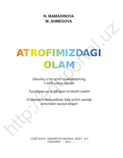

AO1-sinf o'quvchilari uchun tabiat va atrof-muhit haqidagi ilk darslik.
Ushbu darslik umumiy o'rta ta'lim maktablarining 1-sinf o'quvchilari uchun mo'ljallangan bo'lib, atrof-muhit, tabiat hodisalari va hayvonot dunyosi haqida boshlang'ich bilimlarni beradi. Kitob o'quvchilarda tabiatga nisbatan mehr va uni asrash ko'nikmalarini shakllantirishga qaratilgan.